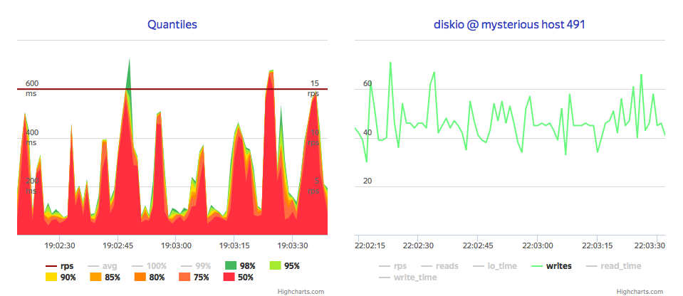
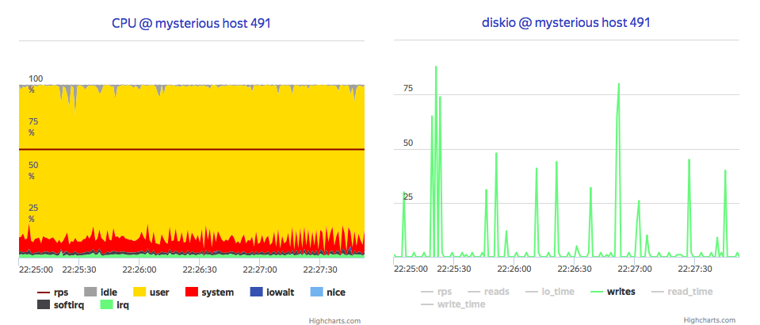
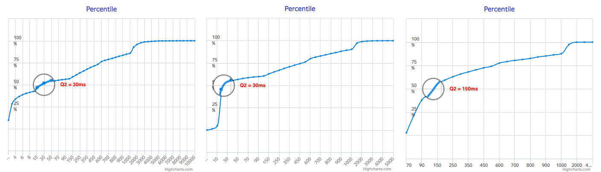
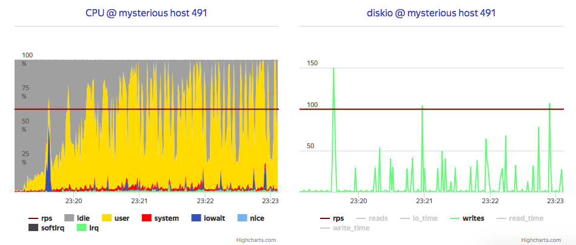
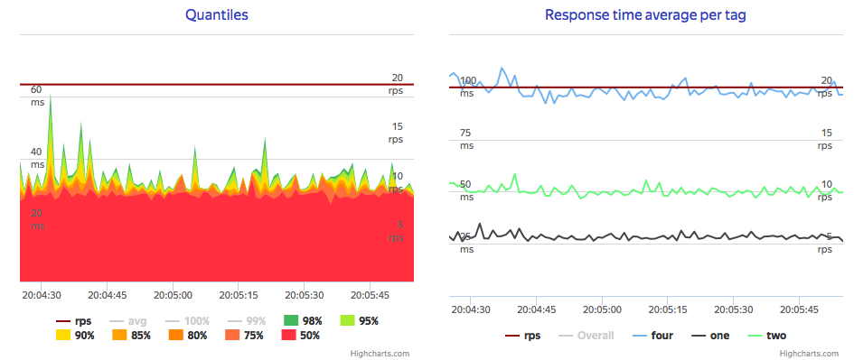
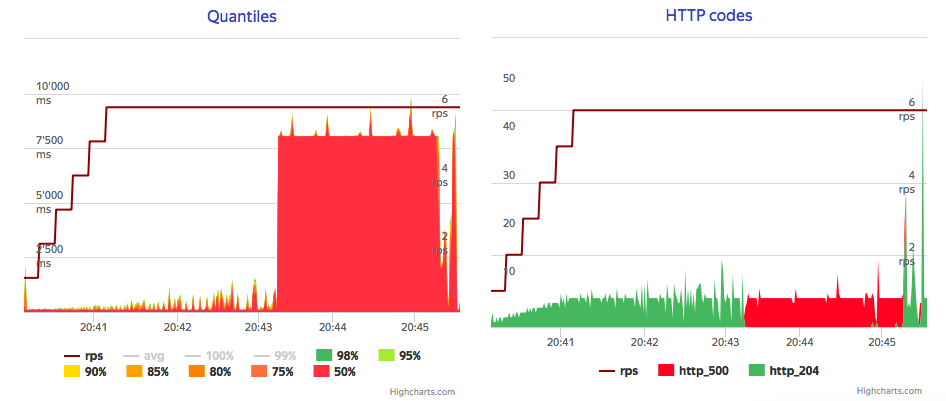

Road to TSDB
 Atsuko
Ito
Atsuko
Ito
me@yottatsa.name
@yottatsa on LinkedIn Papers
People say knowledge is power. If so - a good measurement is a key for obtaining this knowledge. I'm going to find out the way how to measure system of any size. The problem is: docs and blog have no contents around how many resources you need to allocate, just some measurements to extrapolate. My goal is to dig into some of off-the-shelf tools to provide the data on resource planning for your The Measurement System.
InfluxDB
The most obvious way to measure smth is to dump all the measurement data into a single DB, then aggregate in whatever appropriate way. What technical tool to use to solve this? Seems like InfluxDB is unbeatable here, as you need to just run docker container with latest version (1.0.1 at the moment), and you're up.
So let’s do some load testing and see how much it can bear. For this test, I’m going to generate sample set (ammo) of metrics, that imitates 1K hosts, 12 metrics, sending them using HTTP interface in batches 20 metrics per request. Uh-oh: 18 000 metrics per minute, or max 200 hosts sending 100 metrics every minute, on VM
Note that it stuck near 40 IOPS, so it seems it disk-bound by default, which is stated in docs.
Let's dig into architecture. InfluxDB receives datapoint (metric and metadata), lookup or store metadata, commit datapoint into write-ahead log and then store bunch of data points from the WAL in compressed way (just like Column-oriented DMBS does) using their tsm1 engine. So first approach was storing WAL on tmpfs.
It easily scales up to 30 000 metrics per second per core, which is 2 orders of magnitude boost. Moreover, it shows that disk load reduced to almost zero, and process is now CPU bound.
Next, let's push it further and check it for OpenStack Ceilometer case, where every VM generates some metrics, and VMs is tend to be re-created. According to tsm1 config, it could store up to 1 000 000 metrics and write it by 1000 points, so I tune up load generator to the scenario, where 500 VMs spawns and removes every work hour in a month, and send their metrics to InfluxDB via some broker with aggregation by 100, 1 000 and 10 000 metrics per batch.
What it show, that bigger blocks shows more predictable response timings, and also shows distinct CPU load for writing data, which makes long tail less smooth, but overall smaller. It also gives grouped writes, which could be good for overall data safety, since WAL is in tmpfs right now.
Finally, it's all about watching stored data, so it will be nice if Grafana could periodically refresh some aggregated monitorings. As InfluxDB is a Column-oriented, assume that read performance is lower-bound by read and extract cost, so let's measure read-only performance. It shows median 25 ms per Metric, and that time grows linearly on reads despite differrent amount of points (10, 20 and 40).
Also, speaking of resource bounds, even if it CPU-bounded for single flow of requests, it leaves almost 3/4 of it on same Metrics per second rate, what could say that Influx heavily cache read blocks. So what will be if we ask InfluxDB for fresh data with moderate rate using 30% of overall CPU time, while we use 50% of overall CPU for writes? Long-long writes:
I set coordinator write-timeout to 120s and even with this I've accidentally run into timeouts, with no CPU exhausted. There is point for further investigation, but problem could be handled using write flow control with exponential back-off, and even with temporary block for readers.
Conclusion
Latest versions has no clustering, so you have to build your HA using some nuts and bolts. Decent read performance, great write performance, but you need to implement smart writers and front-ends.
This work is licensed under a Creative Commons Attribution-ShareAlike 4.0 International License.